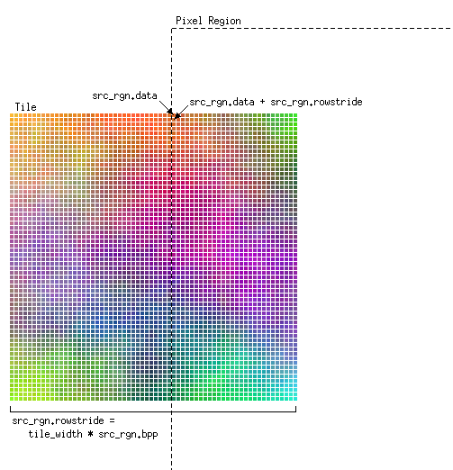

To be able to access the image data efficiently you should align your plug-in to the internal data structure of the The GIMP, i.e., work directly on the tiles. Then the performance impact by copying the data around does not matter. The GIMP offers the concept of tile-iterators. You need two function calls:
gpointer gimp_pixel_rgns_register (gint nrgns,
...);
gpointer gimp_pixel_rgns_process (gpointer pri_ptr);
The first function prepares pixel regions for the actual iteration (the remaining arguments have to have the type GimpPixelRgn *). You can give multiple pixel regions when you want to copy image data between different drawables.
Here is a typical excerpt from a plug-in that iterates over a certain area and slightly modifies the original image data:
/* substitute pixel vales */
gimp_pixel_rgn_init (&src_rgn, drawable,
x1, y1, (x2 - x1), (y2 - y1), FALSE, FALSE);
gimp_pixel_rgn_init (&dest_rgn, drawable,
x1, y1, (x2 - x1), (y2 - y1), TRUE, TRUE);
for (pr = gimp_pixel_rgns_register (2, &src_rgn, &dest_rgn);
pr != NULL;
pr = gimp_pixel_rgns_process (pr))
{
src = src_rgn.data;
dest = dest_rgn.data;
for (y = 0; y < src_rgn.h; y++)
{
s = src;
d = dest;
for (x = 0; x < src_rgn.w; x++)
{
d[0] = (src_rgn.x + x + src_rgn.y + y) % 256;
d[1] = s[1];
d[2] = (- src_rgn.x - x + src_rgn.y + y) % 256;
if (has_alpha)
d[alpha] = s[alpha];
s += src_rgn.bpp;
d += dest_rgn.bpp;
}
src += src_rgn.rowstride;
dest += dest_rgn.rowstride;
}
/* Update progress */
progress += src_rgn.w * src_rgn.h;
gimp_progress_update ((double) progress / (double) max_progress);
}
It is very important that you add src_rgn.rowstride to the current pointer to reach the next row. This is important: src_rgn.data points to the correct start of the image data, but the array may also contain image data from outside the pixel region.

This approach avoids exessive copying and reordering of image data and is much faster than the naive gimp_pixel_rgn_get_* approach.